10. Photosynthetic Capacity¶
The photosynthetic capacity is represented by two key parameters: 1) the maximum rate of carboxylation at 25 oC, 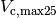; and 2) the maximum rate of electron transport at 25 oC, 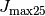 . They are predicted by a mechanistic model of leaf utilization of nitrogen for assimilation (LUNA V1.0) (Ali et al. 2016) based on an optimality hypothesis to nitrogen allocation among light capture, electron transport, carboxylation, respiration and storage. Specifically, the model allocates the nitrogen by maximizing the daily net photosynthetic carbon gain under following two key assumptions:
- nitrogen allocated for light capture, electron transport and carboxylation are co-limiting;
- respiratory nitrogen is allocated to maintain dark respiration determined by 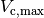.
Compared to traditional photosynthetic capacity models, a key advantage of LUNA is that the model is able to predict the potential acclimation of photosynthetic capacities at different environmental conditions as determined by temperature, radiation, CO 2 concentrations, day length, and humidity.
10.1. Model inputs and parameter estimations¶
The LUNA model includes the following four unitless parameters:
- 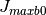 , which specifies the baseline proportion of nitrogen allocated for electron transport;
- 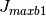 , which determines response of electron transport rate to light availability;
- 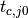 , which defines the baseline ratio of Rubisco-limited rate to light-limited rate;
 , which determines the response of electron transport rate to relative humidity.
, which determines the response of electron transport rate to relative humidity.
The above four parameters are estimated by fitting the LUNA model to a global compilation of >800 obervations
located at different biomes, canopy locations, and time of the year from 1993-2013 (Ali et al 2015). The model inputs
are area-based leaf nitrogen content, leaf mass per unit leaf area and the driving environmental conditions (average of past 10 days)
including temperature, CO 2 concentrations, daily mean and maximum radiation, relative humidity and day length.
The estimated values in CLM5 for the listed parameters are 0.0311, 0.1745, 0.8054, and 6.0999, repectively. In LUNA V1.0, the estimated
parameter values are for C3 natural vegetations. In view that potentially large differences in photosythetic capacity could exist
between crops and natural vegetations due to human selection and genetic modifications, in CLM5,
the LUNA model are used only for C3 natural vegetations. The photosynthetic capacity for crops and C4 plants are thus
still kept the same as CLM4.5. Namely, it is estimated based on the leaf nitrogen content, fixed RUBISCO allocations for
 and an adjusting factor to account for the impact of day length. In CLM5, the model simulates both sun-lit and shaded leaves;
however, because the sun-lit and shaded leaves can changes through the day based on the sun angles,
we do not differentiate the photosynthetic capacity difference for sun-lit or shaded leaves.
and an adjusting factor to account for the impact of day length. In CLM5, the model simulates both sun-lit and shaded leaves;
however, because the sun-lit and shaded leaves can changes through the day based on the sun angles,
we do not differentiate the photosynthetic capacity difference for sun-lit or shaded leaves.
10.2. Model structure¶
The structure of the LUNA model is adapted from Xu et al.(2012), where the plant nitrogen at the leaf level ( 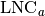; gN/ m 2 leaf) is divided into four pools: structural nitrogen( 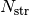; gN/m 2 leaf), photosynthetic nitrogen ( 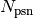; gN/ m:sup:2 leaf), storage nitrogen( ; gN/m 2 leaf), and respiratory nitrogen ( 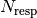; gN/m 2 leaf). Namely,
(1)¶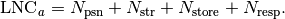
The photosynthetic nitrogen, , is further divided into nitrogen for light capture ( 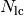; gN/m 2 leaf), nitrogen for electron transport ( 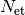; gN/m 2 leaf), and nitrogen for carboxylation ( 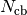; gN/m 2 leaf). Namely,
(2)¶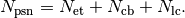
The structural nitrogen, , is calculated as the multiplication of leaf mass per unit area (LMA: g biomass/m 2 leaf), and the structural nitrogen content (SNC; gN/g biomass). Namely,
(3)¶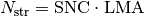
where SNC is set to be fixed at 0.002 (gN/g biomass), based on data on C:N ratio from dead wood (White etal.,2000).
We assume that plants optimize their nitrogen allocations (i.e., , , , , ) to maximize the photosynthetic carbon gain, defined as
the gross photosynthesis (  ) minus the maintenance respiration for
photosynthetic enzymes ( 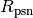 ), under specific
environmental conditions and given plant’s strategy of leaf nitrogen
use. Namely, the solutions of nitrogen allocations { , , , , } can be estimated as follows,
) minus the maintenance respiration for
photosynthetic enzymes ( 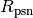 ), under specific
environmental conditions and given plant’s strategy of leaf nitrogen
use. Namely, the solutions of nitrogen allocations { , , , , } can be estimated as follows,
(4)¶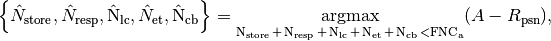
where is the functional nitrogen content defined as the total leaf nitrogen content ( ) minus the structural nitrogen content ( ).
The gross photosynthesis, , was calculated with a coupled leaf gas exchange model based on the Farquhar et al. (1980) model of
photosynthesis and Ball–Berry-type stomatal conductance model (Ball et al., 1987). The maintenance respiration for photosynthetic enzymes, , is
calculated by the multiplication of total photosynthetic nitrogen ( ) and the maintenance respiration cost for photosynthetic enzymes.
In the LUNA model, the maximum electron transport rate
(  ; 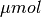 electron / m -2/s)
is simulated to have a baseline allocation of nitrogen and additional
nitrogen allocation to change depending on the average daytime
photosynthetic active radiation (PAR; electron / m -2/s), day length (hours) and air humidity.
Specifically, the LUNA model has
; 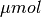 electron / m -2/s)
is simulated to have a baseline allocation of nitrogen and additional
nitrogen allocation to change depending on the average daytime
photosynthetic active radiation (PAR; electron / m -2/s), day length (hours) and air humidity.
Specifically, the LUNA model has
(5)¶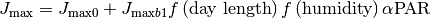
The baseline electron transport rate, 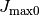, is calculated as follows,
(6)¶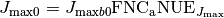
where 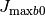 (unitless) is the baseline proportion of nitrogen
allocated for electron transport rate. ( electron /s/g N)
is the nitrogen use efficiency of 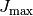. 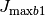 (unitless) is a coefficient determining the response of the electron
transport rate to amount of absorbed light (i.e., 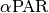).
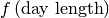 is a function specifies the impact of day
length (hours) on in view that longer day length has been demonstrated by previous studies to alter 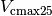 and
(Bauerle et al., 2012; Comstock and Ehleringer, 1986) through photoperiod sensing and regulation (e.g. Song et al., 2013).
Following Bauerle et al. (2012), is simulated as follows,
(7)¶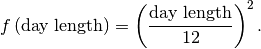
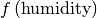 represents the impact of air humitidy on . We assume that higher humidity leads to higher with less water limiation on stomta opening and that low relative humidity has a stronger impact on nitrogen allocation due to greater water limitation. When relative humidity (RH; unitless) is too low, we assume that plants are physiologically unable to reallocate nitrogen. We therefore assume that there exists a critical value of relative humidity ( 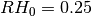; unitless), below which there is no optimal nitrogen allocation. Based on the above assumptions, we have
(8)¶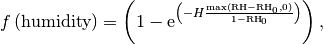
where (unitless) specifies the impact of relative humidity on electron transport rate.
The efficiency of light energy absorption (unitless),  , is calculated
depending on the amount of nitrogen allocated for light capture,
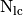. Following Niinemets and Tenhunen (1997), the LUNA model has,
, is calculated
depending on the amount of nitrogen allocated for light capture,
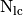. Following Niinemets and Tenhunen (1997), the LUNA model has,
(9)¶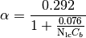
where 0.292 is the conversion factor from photon to electron. 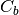 is the conversion factor (1.78) from nitrogen to chlorophyll. After we estimate , the actual electron transport rate with the daily maximum radiation ( 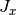) can be calculated using the empirical expression of leaf (1937),
(10)¶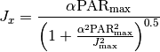
where ( /m 2/s) is the maximum photosynthetically active radiation during the day.
Based on Farquhar et al. (1980) and Wullschleger (1993), we can calculate the electron-limited photosynthetic rate under daily maximum radiation ( 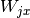) and the Rubisco-limited photosynthetic rate ( 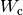) as follows,
(11)¶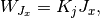
(12)¶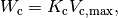
where 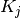 and 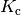 as the conversion factors for and ( to and to 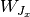), respectively. Based on Xu et al. (2012), Maire et al. (2012) and Walker et al. (2014), we assume that is proportional to . Specifically, we have
(13)¶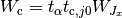
where 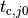 is the baseline ratio of to . We recognize that this ratio may change depending on the nitrogen use efficiency of carboxylation and electron transport (Ainsworth and Rogers, 2007), therefore the LUNA model has the modification factor, 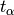, to adjust baseline the ratio depending on the nitrogen use efficiency for electron vs carboxylation (Ali et al 2016).
Following Collatz et al.(1991a), the total respiration ( 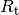) is calculated in proportion to ,
(14)¶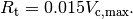
Accounting for the daytime and nighttime temperature, the daily respirations is calculated as follows,
(15)¶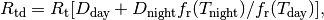
where and are daytime and nighttime durations in seconds. and are the temperature response functions for respiration [see Appendix B in Ali et al (2016) for details ].
10.3. Numerical scheme¶
The LUNA model searches for the “optimal” nitrogen allocations for maximum net photosynthetic carbon gain by incrementally increase the nitrogen allocated for light capture (i.e., ) (see Ali et al 2016 for details) . We assume that plants only optimize the nitrogen allocation when they can grow (i.e., GPP>0.0). If GPP become zero under stress, then the LUNA model assume a certain amount of enzyme will decay at daily rates of 0.1, in view that the half-life time for photosynthetic enzymes are short (~7 days) (Suzuki et al. 2001). To avoid unrealistic low values of photosynthetic capacity, the decay is only limited to 50 percent of the original enzyme levels.